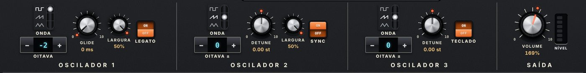

AURA Synth Bass
Feito para o palco.
O sintetizador de baixo que responde como um instrumento de verdade. No Windows e no Mac, como programa ou plugin.
Teste grátis por 15 dias, sem cartão. Uma licença vale para 3 aparelhos seus.

Três osciladores. Um grave que você sente.
Onda, oitava, detune, sub e ruído, tudo à vista. Sem menus escondidos entre você e o som.

Um filtro de 24 dB.
Esculpido à mão.
Cutoff, ressonância e drive para abrir, fechar e sujar o som no ritmo da música.

Movimento em cada nota.
LFO e envelopes para dar ataque, corpo e respiração ao som.

Tudo o que um baixo sintetizado precisa.
Som, palco, efeitos, MIDI e presets. Pronto para usar, sem curva de aprendizado.
Som de verdade
Três osciladores, sub e ruído, filtro de 24 dB com ressonância e drive, e envelopes completos para volume e filtro.
Pronto para o palco
Botão de pânico, cadeado de tela, modo tela cheia, setlist com Program Change e preset de emergência.
Efeitos e arpejador
Distorção, fuzz, bitcrusher, chorus, phaser, delay, reverb e um arpejador sincronizado ao andamento.
MIDI sem complicação
USB e Bluetooth. Ligue qualquer botão do controlador a qualquer knob em segundos.
Presets e nuvem
Favoritos, categorias, importação e backup. Sincronize seus sons entre aparelhos pela conta na nuvem. Um preset pode trazer os próprios efeitos e ligá-los ao ser escolhido.
Oito timbres de fábrica
Drive, Drive (Stage 2), Octave (Clean), Octave (Wild), Sub Bass e Chorus — prontos no visor, feitos para o repertório de baixo.
Para iniciantes
Manual ilustrado em português que explica do zero o que cada controle faz.
Toque agora. Sem instalar.
Abra o AURA aqui mesmo, no navegador, e experimente por 5 minutos. Use fones ou caixas e, se tiver, um teclado MIDI.
Funciona em computador, iPad e tablet. Para usar sem limite, baixe o teste de 15 dias.
Pronto para tocar ao vivo.
Pânico, cadeado de tela, setlist e MIDI. Pensado por quem toca.
Menu Ajustes
Presets, efeitos, toque e MIDI em um só lugar.

Arpejador
Padrões, divisão, swing e trava, sincronizados ao andamento.

Claro ou escuro.
Prateado escovado para a luz forte, grafite para o palco. Os dois têm exatamente as mesmas funções: só a cor muda.

Instale. Toque. Em minutos.
Instalação e licença.
Do download ao primeiro som em poucos minutos.
Sem internet, o AURA continua funcionando por até 30 dias entre as confirmações da licença.
Especificações
Do primeiro som ao palco.
Manual completo em português, com telas numeradas, conceitos de síntese para quem nunca usou um sintetizador, receitas de som, o menu Ajustes explicado item por item e solução de problemas.
Experimente por 15 dias.
Todos os recursos liberados. Sem cartão.
Neste aparelho (celular ou tablet) o instalador não funciona: ele é para Windows e Mac. Você pode testar o AURA agora, online ›
Licença completa: em breve. Garantia de 7 dias após a compra.
Se o Windows ou o Mac avisar que o instalador é de um desenvolvedor desconhecido, confirme que o arquivo veio desta página. Windows: “Mais informações” → “Executar assim mesmo”. Mac: botão direito no instalador → “Abrir”.
Dúvidas frequentes.
Posso instalar em mais de um computador?
Sim. Cada chave vale para até 3 aparelhos seus. Para mudar de aparelho, desative um deles dentro do AURA e ative no novo.
O que acontece depois dos 15 dias?
O AURA pede a chave de ativação. Seus presets continuam salvos.
Preciso de internet para usar?
Só para ativar e confirmar a licença de tempos em tempos. Depois o AURA funciona offline por até 30 dias entre as confirmações.
Funciona com o meu teclado MIDI?
Com qualquer controlador MIDI USB compatível com o seu sistema, e também por Bluetooth MIDI em computadores que oferecem esse recurso.
Funciona no Reaper e em outras DAWs?
Sim, como plugin VST3 (Windows e Mac) ou Audio Unit (Mac).
E se eu não gostar?
Você tem 7 dias de garantia: reembolso integral e a licença é desativada.